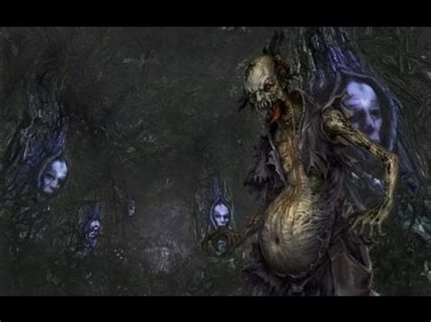

The book Shenyi Jing by Dongfang Shuo: In the deep mountains in the west, there is a kind of animal in the form of a human being but just over one chi tall. It is naked. It catches shrimp and crabs, and roasts them over fire and eats then. Such an animal is called Shanxiao. It cries in a way as if it is calling its own name. When a man offends such an animal, he will suffer from chills and fever. This is a disease caused by evil. The animal may appear anywhere. But it is afraid of the piercing noise of firecrackers. The book Youming Lü by Liu Yiqing: Among the mountain cliffs in Dongchang County, there is an animal that looks like a human being. It is four to five chi tall. It is naked and has disheveled hair, five to six cun long. It shouts loudly. It is very difficult to sight one. It turns over stones in streams to catch shrimp and crabs, which it roasts over a fire and eats. The book Yongji Ji: There is a kind of Shangui in Anguo County. It looks like a human being but has only one leg. It is just over one chi tall. It steals salt from woodcutters to eat with the stone crabs that it roasts over fire. Human beings dare not offend it. If a person offends or hurts such a creature, the person may become sick or his house will be burned down. The book Xuanzhong Ji: Shanjing looks like a human being. It has one leg and is about three to four chi tall. It eats mountain crabs. It hides itself during the day and comes out at night. A 11,000-year-old toad can eat it. The book Baopuzi: Shanjing looks like a baby. It has only one leg, which is turned backwards. It attacks people at night. It is called a Ji. When it attacks, one should just call out its name. Then it will not able to attack a person. The hook Baize Tu: There is a kind of mountain spirit called Kui that is shaped like a drum. It is red and walks on its single leg. People drive it to catch tigers and leopards. The book Hailu Suishi: There is a kind of animal in the area south of the Five Ridges that has one leg and a reversed heel. There are three digits on each hand and foot. The male is called Shanzhang, and the female Shangu. It knocks on doors at night to beg for things. The book Shenyi Jing: There is a kind of animal called Ba or Hanmu in the south. It is two to three chi tall. It is naked, and its eyes are on the top of its head. It runs as fast as the wind. When such an animal is sighted, there will be a major drought. When such a thing is encountered, the person should throw it into a manure pit. In this way the drought can be avoided. The book Wenzi Zhigui: Hanba is a kind of mountain ghost. When it stays in a place, no rain will fall there. When a female Ba enters a house, it may steal things. When a male Ba enters a house, it kidnaps the woman. Li Shizhen's comment: The above books recorded creatures that are more or less similar. All of them are ghosts and devils. Now such a creature is called "one-legged ghost" In the past it was reported that such creatures existed everywhere. They hid themselves and sneaked into houses to copulate with the women in the house, causing trouble and disease. They might set fires or steal things from houses. Taoist masters could not drive them away, and no medicine could treat these diseases. So people worshipped it as a spirit to plead for peace. But nobody knew the nature of such things. This is recorded here for reference. When such a thing appears, one of the ways to throw off its evil is to call out its name. In this way it will not harm people. A 1,000-year-old toad can eat it. These are ways to control it, and there must be other ways to control it too. There is also a kind of Zhiniao, a bird recorded in the "Category of the Fowls" that is also a creature that harms people. There are plenty of such harmful spirits and ghosts in this world. Such things are recorded in the books Baize Tu, Xuanzhong Ji, Baopuzi and Youyang Zaju. We have to know about them. But if a man behaves virtuously, such ghosts dare not approach him. This is one way to protect oneself. (tr. Luo 2003: 4130)